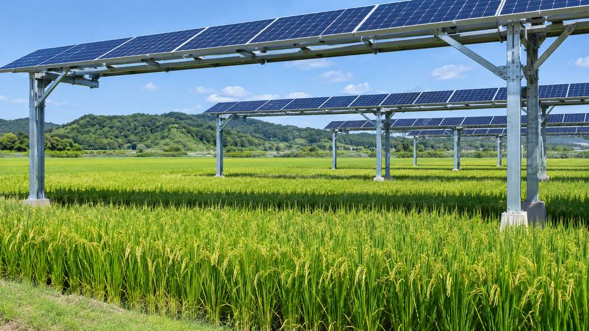

농업법인도 영농형 태양광 발전사업 길 열린다…농식품부 규제개선 50개 과제 확정

2만㎡ 미만 영농형은 소규모 환경영향평가 면제 추진…12월 17일 법 시행 맞춰 내년 6월까지 시행령 개정
농림축산식품부가 5개 분야 50개 규제합리화 과제를 확정하고 농업법인의 사업 범위에 영농형 태양광 발전사업을 넣기로 했다. 지금까지 농업법인이 할 수 있는 사업 목록에는 영농형 태양광이 들어 있지 않았다. 발전사업 면적이 2만㎡ 미만인 소규모 영농형 태양광은 기후에너지환경부와 협력해 소규모 환경영향평가를 면제하는 방안을 추진한다. 농식품부는 12월 17일 영농형 태양광 관련 법률 시행에 맞춰 제도를 정비하고, 내년 6월까지 관련 시행령 개정을 마칠 계획이다. 이번 과제에는 부부가 각자 독립적으로 농사를 지으면 두 사람 모두 영농정착지원금을 받게 하는 방안과, 올해 10월 31일까지 생긴 관행적 농지 임대차 등의 위법 사항에 대해 3년간 처분을 미루는 특별법 제정 추진도 담겼다. 송미령 장관은 이번 과제가 "지역에 미래를 밝히는 출발점"이라고 말했다.
시민에너지 관점
2만㎡ 미만 사업의 환경영향평가 문턱을 낮추고 농업법인에 길을 연 것은 마을과 농가 단위의 영농형 태양광을 넓히는 방향이다. 농업법인 허용이 외부 자본의 우회 통로가 될 수 있다는 우려가 있지만, 이는 법인의 지분 구성과 지역 거주 요건을 시행령에 분명히 적으면 막을 수 있다. 영농형 태양광의 수익이 농촌에 남으려면 농사를 짓는 농민과 마을 주민이 발전소의 주인이어야 한다. 내년 6월까지 이어질 시행령 개정 과정에 농민과 마을 조합이 직접 의견을 내야 한다.
출처: 뉴시스 2026-11-06 이수정 원문 보기
農業法人にも営農型太陽光発電事業の道…韓国農林畜産食品部、規制改善50課題を確定
2万㎡未満の営農型は小規模環境影響評価の免除を推進…12月17日の法施行に合わせ来年6月までに施行令改正
韓国の農林畜産食品部は、5分野50件の規制合理化課題を確定し、農業法人の事業範囲に営農型太陽光発電事業を加えることにした。これまで農業法人が行える事業の一覧に営農型太陽光は含まれていなかった。発電事業面積が2万㎡未満の小規模な営農型太陽光については、気候エネルギー環境部と協力して小規模環境影響評価を免除する方策を進める。同部は12月17日の営農型太陽光関連法の施行に合わせて制度を整え、来年6月までに関連施行令の改正を終える計画だ。今回の課題には、夫婦がそれぞれ独立して営農すれば2人とも営農定着支援金を受けられるようにする案や、今年10月31日までに生じた慣行的な農地賃貸借などの違法事項について3年間処分を猶予する特別法の制定推進も盛り込まれた。宋美玲（ソン・ミリョン）長官は、今回の課題が「地域の未来を照らす出発点」だと述べた。
市民エネルギーの視点
2万㎡未満の事業の環境影響評価の敷居を下げ、農業法人に道を開いたことは、村や農家単位の営農型太陽光を広げる方向だ。農業法人の容認が外部資本の迂回路になりうるという懸念はあるが、法人の持分構成と地域居住要件を施行令に明記すれば防げる。営農型太陽光の収益が農村に残るには、農業を営む農民と村の住民が発電所の持ち主でなければならない。来年6月まで続く施行令改正の過程で、農民と村の組合が直接意見を出すべきだ。
出典: 뉴시스 2026-11-06 Lee Su-jeong 原文を読む
农业法人也可经营农光互补发电…韩国农林畜产食品部确定50项规制改革课题
推进免除2万平方米以下农光互补项目的小规模环境影响评价…配合12月17日法律施行，明年6月前修订施行令
韩国农林畜产食品部确定了5个领域共50项规制合理化课题，决定将农光互补（营农型太阳能）发电业务纳入农业法人的经营范围。此前，农业法人可从事的业务清单中并不包括农光互补。对于发电项目面积不足2万平方米的小规模农光互补项目，该部将与气候能源环境部合作，推进免除小规模环境影响评价。该部计划配合12月17日农光互补相关法律的施行完善制度，并在明年6月前完成相关施行令的修订。此次课题还包括：夫妻各自独立务农时两人均可领取务农定居补助金，以及推进制定特别法，对今年10月31日前发生的惯行性农地租赁等违法事项暂缓处分3年。部长宋美玲表示，此次课题是"照亮地方未来的起点"。
市民能源视角
降低2万平方米以下项目的环境影响评价门槛并向农业法人开放，是扩大村庄和农户层面农光互补的方向。有人担心允许农业法人参与会成为外部资本的迂回通道，但只要在施行令中明确规定法人的股权构成和当地居住要件，就可以防止。要让农光互补的收益留在农村，务农的农民和村民就必须成为发电站的主人。在持续到明年6月的施行令修订过程中，农民和村庄合作社应直接提出意见。
来源: 뉴시스 2026-11-06 이수정 查看原文
Korea opens agrivoltaic power business to farm corporations as farm ministry finalizes 50 regulatory reforms
Push to exempt agrivoltaic projects under 20,000 square meters from small-scale environmental impact assessment; decree revisions by next June ahead of the law taking effect Dec. 17
South Korea's Ministry of Agriculture, Food and Rural Affairs has finalized 50 regulatory reform tasks across five areas and will add agrivoltaic power generation to the business scope of farm corporations. Until now, agrivoltaics was not on the list of businesses farm corporations are allowed to run. For small agrivoltaic projects with a generation area under 20,000 square meters, the ministry will work with the Ministry of Climate, Energy and Environment to exempt them from the small-scale environmental impact assessment. The ministry plans to align its rules with the agrivoltaics law that takes effect on Dec. 17 and to finish revising the related enforcement decrees by June next year. The package also lets both spouses receive farm settlement support when each farms independently, and pursues a special act deferring for three years penalties on violations such as customary farmland leases that arose by Oct. 31 this year. Minister Song Mi-ryung called the tasks "a starting point that lights up the future of the regions."
Citizen Energy View
Lowering the environmental assessment threshold for projects under 20,000 square meters and opening the door to farm corporations moves toward wider agrivoltaics at the village and farm level. Some worry that allowing farm corporations could become a back door for outside capital, but that can be prevented if the enforcement decree clearly sets ownership structure and local residency requirements. For agrivoltaic income to stay in rural areas, the farmers who work the land and local residents must own the power plants. Farmers and village cooperatives should speak up directly as the decree is revised through next June.
Source: 뉴시스 2026-11-06 Lee Su-jeong Read the original